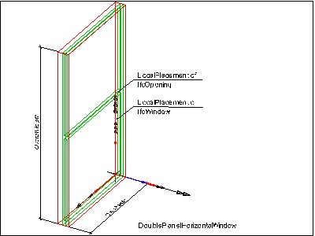
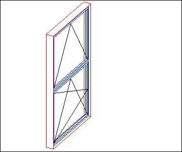
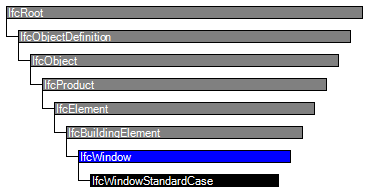
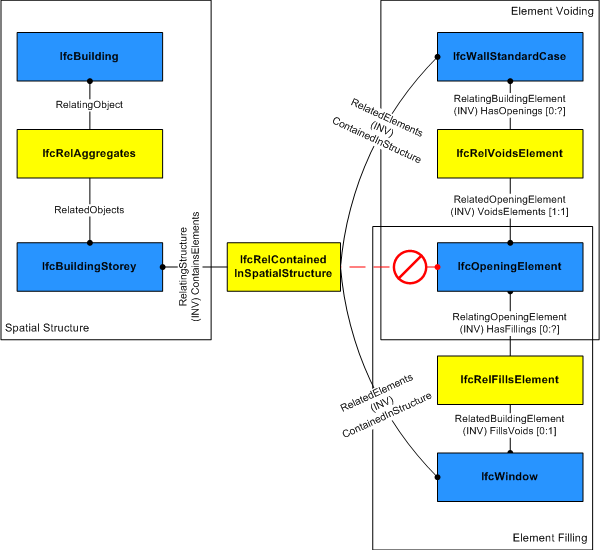

Natural language names
 | Fenster |
 | Window |
 | Fenêtre |
| Fenster |
| Window |
| Fenêtre |
| Item | SPF | XML | Change | Description | IFC2x3 to IFC4 |
|---|---|---|---|---|
| IfcWindow | ||||
| OwnerHistory | MODIFIED | Instantiation changed to OPTIONAL. | ||
| PredefinedType | ADDED | |||
| PartitioningType | ADDED | |||
| UserDefinedPartitioningType | ADDED |
The window is a building element that is predominately used to provide natural light and fresh air. It includes vertical opening but also horizontal opening such as skylights or light domes. It includes constructions with swinging, pivoting, sliding, or revolving panels and fixed panels. A window consists of a lining and one or several panels.
NOTE Definition according to ISO 6707-1
Construction for closing a vertical or near vertical opening in a wall or pitched roof that will admit light and may admit fresh air.
The IfcWindow defines a particular occurrence of a window inserted in the spatial context of a project. A window can:
NOTE View definitions or implementer agreements may restrict the relationship to only include one window (or door) into one opening.
There are two entities for window occurrences:
The actual parameter of the window and/or its shape is defined at the IfcWindow as the occurrence definition (or project instance), or by the IfcWindowType as the specific definition (or project type). The following parameters are given:
HISTORY New entity in IFC1.0.
IFC4 CHANGE The attributes PredefinedType and OperationType are added, the applicable type object has been changed to IfcDoorType.
Parameteric Representation using parameters at IfcWindowType
The parameters, which define the shape of the IfcWindow, are given at the IfcWindowType and the property sets, which are included in the IfcWindowType. The IfcWindow only defines the local placement. The overall size of the IfcWindow to be used to apply the lining or panel parameter provided by the IfcWindowType is determined by the IfcShapeRepresentation with the RepresentationIdentifier = 'Profile'. Only in case of an IfcWindow inserted into an IfcOpeningElement using the IfcRelFillsElement relatioship, having a horizontal extrusion (along the y-axis of the IfcDoor), the overall size is determined by the extrusion profile of the IfcOpeningElement.
Figure 256 illustrates the insertion of a window into the IfcOpeningElement by creating an instance of IfcWindow with PartitioningType = DoublePanelHorizontal. The parameters OverallHeight and OverallWidth show the extent of the window in the positive Z and X axis of the local placement of the window. The lining and the transom are created by the given parameters.
 |
Figure 256 — Window placement |
Figure 257 illustrates the final window (DoublePanelHorizontal) with first panel having PanelPosition = TOP, OperationType = BOTTOMHUNG and second panel having PanelPosition = BOTTOM and OperationType = TILTANDTURNLEFTHAND.
 |
Figure 257 — Window planes |
Window opening operation by window type
The parameters that defines the shape of the IfcWindow, are given at the IfcWindowType and the property sets, which are included in the IfcWindowType. The IfcWindow only defines the local placement which determines the opening direction of the window. The overall layout of the IfcWindow is determined by its IfcWindowType.PartitioningType. Each window panel has its own operation type, provided by IfcWindowPanelProperties.OperationType. All window panels are assumed to open into the same direction (if relevant for the particular window panel operation. The hindge side (whether a window opens to the left or to the right) is determined by the IfcWindowPanelProperties.OperationType.
NOTE There are different conventions in different countries on how to show the symbolic presentation of the window panel operation (the "triangles"). Either as seen from the exterior, or from the interior side. The following figures show the symbolics from the exterior side (the convention as used predominately in Europe).
Figure 258 illustrates window operation types.
| ||||||||
Figure 258 — Window operations |
| # | Attribute | Type | Cardinality | Description | C |
|---|---|---|---|---|---|
| 9 | OverallHeight | IfcPositiveLengthMeasure | [0:1] |
Overall measure of the height, it reflects the Z Dimension of a bounding box, enclosing the window opening. If omitted, the OverallHeight should be taken from the geometric representation of the IfcOpening in which the window is inserted.
NOTE The body of the window might be taller then the window opening (for example in cases where the window lining includes a casing). In these cases the OverallHeight shall still be given as the window opening height, and not as the total height of the window lining. | X |
| 10 | OverallWidth | IfcPositiveLengthMeasure | [0:1] |
Overall measure of the width, it reflects the X Dimension of a bounding box, enclosing the window opening. If omitted, the OverallWidth should be taken from the geometric representation of the IfcOpening in which the window is inserted.
NOTE The body of the window might be wider then the window opening (for example in cases where the window lining includes a casing). In these cases the OverallWidth shall still be given as the window opening width, and not as the total width of the window lining. | X |
| 11 | PredefinedType | IfcWindowTypeEnum | [0:1] |
Predefined generic type for a window that is specified in an enumeration. There may be a property set given specificly for the predefined types.
NOTE The PredefinedType shall only be used, if no IfcWindowType is assigned, providing its own IfcWindowType.PredefinedType. | X |
| 12 | PartitioningType | IfcWindowTypePartitioningEnum | [0:1] |
Type defining the general layout of the window in terms of the partitioning of panels.
NOTE The PartitioningType shall only be used, if no type object IfcWindowType is assigned, providing its own IfcWindowType.PartitioningType. | X |
| 13 | UserDefinedPartitioningType | IfcLabel | [0:1] | Designator for the user defined partitioning type, shall only be provided, if the value of PartitioningType is set to USERDEFINED. | X |
| Rule | Description |
|---|---|
| CorrectStyleAssigned | Either there is no door type object associated, i.e. the IsTypedBy inverse relationship is not provided, or the associated type object has to be of type IfcWindowStyle.
NOTEnbsp; The deprecated type IfcWindowStyle is still included for backward compatibility reasons. |

| # | Attribute | Type | Cardinality | Description | C |
|---|---|---|---|---|---|
| IfcRoot | |||||
| 1 | GlobalId | IfcGloballyUniqueId | [1:1] | Assignment of a globally unique identifier within the entire software world. | X |
| 2 | OwnerHistory | IfcOwnerHistory | [0:1] |
Assignment of the information about the current ownership of that object, including owning actor, application, local identification and information captured about the recent changes of the object,
NOTE only the last modification in stored - either as addition, deletion or modification. | X |
| 3 | Name | IfcLabel | [0:1] | Optional name for use by the participating software systems or users. For some subtypes of IfcRoot the insertion of the Name attribute may be required. This would be enforced by a where rule. | X |
| 4 | Description | IfcText | [0:1] | Optional description, provided for exchanging informative comments. | X |
| IfcObjectDefinition | |||||
| HasAssignments | IfcRelAssigns @RelatedObjects | S[0:?] | Reference to the relationship objects, that assign (by an association relationship) other subtypes of IfcObject to this object instance. Examples are the association to products, processes, controls, resources or groups. | X | |
| Nests | IfcRelNests @RelatedObjects | S[0:1] | References to the decomposition relationship being a nesting. It determines that this object definition is a part within an ordered whole/part decomposition relationship. An object occurrence or type can only be part of a single decomposition (to allow hierarchical strutures only). | X | |
| IsNestedBy | IfcRelNests @RelatingObject | S[0:?] | References to the decomposition relationship being a nesting. It determines that this object definition is the whole within an ordered whole/part decomposition relationship. An object or object type can be nested by several other objects (occurrences or types). | X | |
| HasContext | IfcRelDeclares @RelatedDefinitions | S[0:1] | References to the context providing context information such as project unit or representation context. It should only be asserted for the uppermost non-spatial object. | X | |
| IsDecomposedBy | IfcRelAggregates @RelatingObject | S[0:?] | References to the decomposition relationship being an aggregation. It determines that this object definition is whole within an unordered whole/part decomposition relationship. An object definitions can be aggregated by several other objects (occurrences or parts). | X | |
| Decomposes | IfcRelAggregates @RelatedObjects | S[0:1] | References to the decomposition relationship being an aggregation. It determines that this object definition is a part within an unordered whole/part decomposition relationship. An object definitions can only be part of a single decomposition (to allow hierarchical strutures only). | X | |
| HasAssociations | IfcRelAssociates @RelatedObjects | S[0:?] | Reference to the relationship objects, that associates external references or other resource definitions to the object.. Examples are the association to library, documentation or classification. | X | |
| IfcObject | |||||
| 5 | ObjectType | IfcLabel | [0:1] |
The type denotes a particular type that indicates the object further. The use has to be established at the level of instantiable subtypes. In particular it holds the user defined type, if the enumeration of the attribute PredefinedType is set to USERDEFINED.
| X |
| IsDeclaredBy | IfcRelDefinesByObject @RelatedObjects | S[0:1] | Link to the relationship object pointing to the declaring object that provides the object definitions for this object occurrence. The declaring object has to be part of an object type decomposition. The associated IfcObject, or its subtypes, contains the specific information (as part of a type, or style, definition), that is common to all reflected instances of the declaring IfcObject, or its subtypes. | X | |
| Declares | IfcRelDefinesByObject @RelatingObject | S[0:?] | Link to the relationship object pointing to the reflected object(s) that receives the object definitions. The reflected object has to be part of an object occurrence decomposition. The associated IfcObject, or its subtypes, provides the specific information (as part of a type, or style, definition), that is common to all reflected instances of the declaring IfcObject, or its subtypes. | X | |
| IsTypedBy | IfcRelDefinesByType @RelatedObjects | S[0:1] | Set of relationships to the object type that provides the type definitions for this object occurrence. The then associated IfcTypeObject, or its subtypes, contains the specific information (or type, or style), that is common to all instances of IfcObject, or its subtypes, referring to the same type. | X | |
| IsDefinedBy | IfcRelDefinesByProperties @RelatedObjects | S[0:?] | Set of relationships to property set definitions attached to this object. Those statically or dynamically defined properties contain alphanumeric information content that further defines the object. | X | |
| IfcProduct | |||||
| 6 | ObjectPlacement | IfcObjectPlacement | [0:1] | Placement of the product in space, the placement can either be absolute (relative to the world coordinate system), relative (relative to the object placement of another product), or constraint (e.g. relative to grid axes). It is determined by the various subtypes of IfcObjectPlacement, which includes the axis placement information to determine the transformation for the object coordinate system. | X |
| 7 | Representation | IfcProductRepresentation | [0:1] | Reference to the representations of the product, being either a representation (IfcProductRepresentation) or as a special case a shape representations (IfcProductDefinitionShape). The product definition shape provides for multiple geometric representations of the shape property of the object within the same object coordinate system, defined by the object placement. | X |
| ReferencedBy | IfcRelAssignsToProduct @RelatingProduct | S[0:?] | Reference to the IfcRelAssignsToProduct relationship, by which other products, processes, controls, resources or actors (as subtypes of IfcObjectDefinition) can be related to this product. | X | |
| IfcElement | |||||
| 8 | Tag | IfcIdentifier | [0:1] | The tag (or label) identifier at the particular instance of a product, e.g. the serial number, or the position number. It is the identifier at the occurrence level. | X |
| FillsVoids | IfcRelFillsElement @RelatedBuildingElement | S[0:1] | Reference to the IfcRelFillsElement Relationship that puts the element as a filling into the opening created within another element. | X | |
| ConnectedTo | IfcRelConnectsElements @RelatingElement | S[0:?] | Reference to the element connection relationship. The relationship then refers to the other element to which this element is connected to. | X | |
| IsInterferedByElements | IfcRelInterferesElements @RelatedElement | S[0:?] | Reference to the interference relationship to indicate the element that is interfered. The relationship, if provided, indicates that this element has an interference with one or many other elements.
NOTE There is no indication of precedence between IsInterferedByElements and InterferesElements. | X | |
| InterferesElements | IfcRelInterferesElements @RelatingElement | S[0:?] | Reference to the interference relationship to indicate the element that interferes. The relationship, if provided, indicates that this element has an interference with one or many other elements.
NOTE There is no indication of precedence between IsInterferedByElements and InterferesElements. | X | |
| HasProjections | IfcRelProjectsElement @RelatingElement | S[0:?] | Projection relationship that adds a feature (using a Boolean union) to the IfcBuildingElement. | X | |
| ReferencedInStructures | IfcRelReferencedInSpatialStructure @RelatedElements | S[0:?] | Reference relationship to the spatial structure element, to which the element is additionally associated. This relationship may not be hierarchical, an element may be referenced by zero, one or many spatial structure elements. | X | |
| HasOpenings | IfcRelVoidsElement @RelatingBuildingElement | S[0:?] | Reference to the IfcRelVoidsElement relationship that creates an opening in an element. An element can incorporate zero-to-many openings. For each opening, that voids the element, a new relationship IfcRelVoidsElement is generated. | X | |
| IsConnectionRealization | IfcRelConnectsWithRealizingElements @RealizingElements | S[0:?] | Reference to the connection relationship with realizing element. The relationship, if provided, assigns this element as the realizing element to the connection, which provides the physical manifestation of the connection relationship. | X | |
| ProvidesBoundaries | IfcRelSpaceBoundary @RelatedBuildingElement | S[0:?] | Reference to space boundaries by virtue of the objectified relationship IfcRelSpaceBoundary. It defines the concept of an element bounding spaces. | X | |
| ConnectedFrom | IfcRelConnectsElements @RelatedElement | S[0:?] | Reference to the element connection relationship. The relationship then refers to the other element that is connected to this element. | X | |
| ContainedInStructure | IfcRelContainedInSpatialStructure @RelatedElements | S[0:1] | Containment relationship to the spatial structure element, to which the element is primarily associated. This containment relationship has to be hierachical, i.e. an element may only be assigned directly to zero or one spatial structure. | X | |
| HasCoverings | IfcRelCoversBldgElements @RelatingBuildingElement | S[0:?] | Reference to IfcCovering by virtue of the objectified relationship IfcRelCoversBldgElement. It defines the concept of an element having coverings associated. | X | |
| IfcBuildingElement | |||||
| IfcWindow | |||||
| 9 | OverallHeight | IfcPositiveLengthMeasure | [0:1] |
Overall measure of the height, it reflects the Z Dimension of a bounding box, enclosing the window opening. If omitted, the OverallHeight should be taken from the geometric representation of the IfcOpening in which the window is inserted.
NOTE The body of the window might be taller then the window opening (for example in cases where the window lining includes a casing). In these cases the OverallHeight shall still be given as the window opening height, and not as the total height of the window lining. | X |
| 10 | OverallWidth | IfcPositiveLengthMeasure | [0:1] |
Overall measure of the width, it reflects the X Dimension of a bounding box, enclosing the window opening. If omitted, the OverallWidth should be taken from the geometric representation of the IfcOpening in which the window is inserted.
NOTE The body of the window might be wider then the window opening (for example in cases where the window lining includes a casing). In these cases the OverallWidth shall still be given as the window opening width, and not as the total width of the window lining. | X |
| 11 | PredefinedType | IfcWindowTypeEnum | [0:1] |
Predefined generic type for a window that is specified in an enumeration. There may be a property set given specificly for the predefined types.
NOTE The PredefinedType shall only be used, if no IfcWindowType is assigned, providing its own IfcWindowType.PredefinedType. | X |
| 12 | PartitioningType | IfcWindowTypePartitioningEnum | [0:1] |
Type defining the general layout of the window in terms of the partitioning of panels.
NOTE The PartitioningType shall only be used, if no type object IfcWindowType is assigned, providing its own IfcWindowType.PartitioningType. | X |
| 13 | UserDefinedPartitioningType | IfcLabel | [0:1] | Designator for the user defined partitioning type, shall only be provided, if the value of PartitioningType is set to USERDEFINED. | X |
Object Typing
The Object Typing concept applies to this entity as shown in Table 194.
| ||
Table 194 — IfcWindow Object Typing |
Property Sets for Objects
The Property Sets for Objects concept applies to this entity as shown in Table 195.
| |||||||||||||||||||||||||||||||||||||||||||||||||||||||||||||||||||||||||||||||||||||||||||||||||||||||||||||||||||||||||||||||||||||||||||||||||||||||||||||||||||||||||||||||||||||||||||||||||||||||||||||||||||||||||
Table 195 — IfcWindow Property Sets for Objects |
Quantity Sets
The Quantity Sets concept applies to this entity as shown in Table 196.
| ||
Table 196 — IfcWindow Quantity Sets |
Material Constituents
The Material Constituents concept applies to this entity as shown in Table 197.
| ||||||||
Table 197 — IfcWindow Material Constituents |
The material of the IfcWindow is defined by the IfcMaterialConstituentSet or as fall back by IfcMaterial and attached by the IfcRelAssociatesMaterial.RelatingMaterial. It is accessible by the inverse HasAssociations relationship.
If the fall back single IfcMaterial is referenced, it applies to the lining and framing of the window.
Spatial Containment
The Spatial Containment concept applies to this entity as shown in Table 198.
| ||||
Table 198 — IfcWindow Spatial Containment |
The IfcWindow, as any subtype of IfcBuildingElement, may participate alternatively in one of the two different containment relationships:
The IfcWindow may also be connected to the IfcOpeningElement in which it is placed as a filler. In this case, the spatial containment relationship shall be provided, see Figure 257.
 |
NOTE The containment shall be defined independently of the filling relationship, that is, even if the IfcWindow is a filling of an opening established by IfcRelFillsElement, it is also contained in the spatial structure by an IfcRelContainedInSpatialStructure. |
Figure 257 — Window spatial containment |
Product Local Placement
The Product Local Placement concept applies to this entity as shown in Table 199.
| ||||||||||||
Table 199 — IfcWindow Product Local Placement |
The following restriction is imposed:
NOTE The product placement is used to determine the opening direction of the window.
Profile Geometry
The Profile Geometry concept applies to this entity as shown in Table 200.
| ||||||
Table 200 — IfcWindow Profile Geometry |
The window profile is represented by a three-dimensional closed curve within a particular shape representation. The profile is used to apply the parameter of the parametric window representation. The following attribute values for the IfcShapeRepresentation holding this geometric representation shall be used:
A 'Profile' representation has to be provided if:
Profile 3D Geometry
The Profile 3D Geometry concept applies to this entity.
| # | Concept | Model View |
|---|---|---|
| IfcRoot | ||
| Software Identity | Common Use Definitions | |
| Revision Control | Common Use Definitions | |
| IfcObject | ||
| Object Occurrence Predefined Type | Common Use Definitions | |
| IfcElement | ||
| Box Geometry | Common Use Definitions | |
| FootPrint Geometry | Common Use Definitions | |
| Body SurfaceOrSolidModel Geometry | Common Use Definitions | |
| Body SurfaceModel Geometry | Common Use Definitions | |
| Body Tessellation Geometry | Common Use Definitions | |
| Body Brep Geometry | Common Use Definitions | |
| Body AdvancedBrep Geometry | Common Use Definitions | |
| Body CSG Geometry | Common Use Definitions | |
| Mapped Geometry | Common Use Definitions | |
| Mesh Geometry | Common Use Definitions | |
| IfcBuildingElement | ||
| Product Assignment | Common Use Definitions | |
| Surface 3D Geometry | Common Use Definitions | |
| IfcWindow | ||
| Object Typing | Common Use Definitions | |
| Property Sets for Objects | Common Use Definitions | |
| Quantity Sets | Common Use Definitions | |
| Material Constituents | Common Use Definitions | |
| Spatial Containment | Common Use Definitions | |
| Product Local Placement | Common Use Definitions | |
| Profile Geometry | Common Use Definitions | |
| Profile 3D Geometry | Common Use Definitions | |
<xs:element name="IfcWindow" type="ifc:IfcWindow" substitutionGroup="ifc:IfcBuildingElement" nillable="true"/>
<xs:complexType name="IfcWindow">
<xs:complexContent>
<xs:extension base="ifc:IfcBuildingElement">
<xs:attribute name="OverallHeight" type="ifc:IfcPositiveLengthMeasure" use="optional"/>
<xs:attribute name="OverallWidth" type="ifc:IfcPositiveLengthMeasure" use="optional"/>
<xs:attribute name="PredefinedType" type="ifc:IfcWindowTypeEnum" use="optional"/>
<xs:attribute name="PartitioningType" type="ifc:IfcWindowTypePartitioningEnum" use="optional"/>
<xs:attribute name="UserDefinedPartitioningType" type="ifc:IfcLabel" use="optional"/>
</xs:extension>
</xs:complexContent>
</xs:complexType>
ENTITY IfcWindow
SUPERTYPE OF(IfcWindowStandardCase)
SUBTYPE OF (IfcBuildingElement);
OverallHeight : OPTIONAL IfcPositiveLengthMeasure;
OverallWidth : OPTIONAL IfcPositiveLengthMeasure;
PredefinedType : OPTIONAL IfcWindowTypeEnum;
PartitioningType : OPTIONAL IfcWindowTypePartitioningEnum;
UserDefinedPartitioningType : OPTIONAL IfcLabel;
WHERE
CorrectStyleAssigned : (SIZEOF(IsTypedBy) = 0)
OR ('IFCSHAREDBLDGELEMENTS.IFCWINDOWTYPE' IN TYPEOF(SELF\IfcObject.IsTypedBy[1].RelatingType));
END_ENTITY;


 Instance diagram
Instance diagram Link to this page
Link to this page